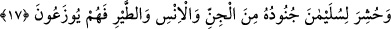
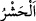
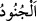
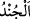
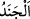
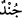
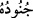

Süyûtî, Fetâvâ’sında zikretmiştir.
Hz. Ömer (r.a.) Hz. Peygamber (s.a.)’e: “Kendisine boyun eğilen ve insanların itâat
ettiği sultan kimdir; bana haber ver?” dedi. Rasûlullah (s.a.) şöyle buyurdu: “O,
Allah’ın yeryüzünde gölgesidir. O iyi davranırsa mükâfat kazanır, size de şükretmek
düşer. Kötü davranırsa günahı ona âiddir, size ise sabretmek düşer.”[52]
Yezdicerd bir hakîme “Hükümdar nasıl düzgün olur?” diye sordu. O da: “Halka
yumuşak davranarak, şiddet göstermeden hakkı alarak, adâleti sağlayarak onlara kendini
sevdirerek, yolların emniyetini sağlayarak ve zulme uğrayana insaflı olarak” diye cevap
verdi.
Şeyh Sa’dî der ki:
Halkı zulüm için öldürmek doğru değildir
Çünkü o saltanatın sığınağı ve dayanağıdır
Köylüye kendin için saygı göster, onları gözet
Zira gönlü hoş edilen işçi daha çok iş yapar
17. Süleyman’ın cinlerden, insanlardan ve kuşlardan müteşekkil orduları
toplandı; hepsi bir arada (onun tarafından) düzenli olarak sevk ediliyordu.
“Süleyman’ın cinlerden, insanlardan ve kuşlardan müteşekkil orduları” her cinsin
komutanının idâresinde “toplandı;” Çünkü Süleyman (a.s.) bir sefere çıkmak
istediğinde komutanlarına emreder ve bu ordulardan gruplar bir araya toplanırdı.
“ bir topluluğu karar kıldıkları yerden çıkarmak, onları savaş ve benzeri şeylere
zorla sevk etmektir. Bu fiil, ancak topluluk için kullanılır. Nitekim el-Müfredât’ta böyle
geçmektedir.
“ kelimesi, “ün çoğuludur. Taşlık, sert arâzi için kullanılan “
kelimesindeki “sertlik” mânâsı dikkate alınarak askere “ denir. Sonra ise her
topluluk için “ denilmiştir. Meselâ bir hadîste “Ruhlar, toplanmış ordulardır.”[53]
buyrulduğu gibi.
Keşfü’l-esrâr’da der ki: “ kelimesinin çoğulu gelmez. Âyette “ (orduları)”
buyrulması, askerlerinin farklı cinslerden oluşmasından dolayıdır.
Mahlûkatın her cinsi, ayrı bir ordudur. Allah Teâlâ: “Rabbinin ordularını O’dan
başkası bilmez.” (el-Müddessir, 74/31) buyurmuştur. Sivrisinek, Nemrud’a karşı bir
ordudur. Ebâbil kuşları Fil sâhiplerine karşı bir ordudur. Hüdhüd kuşu Ûc’un
askerlerine karşı bir ordudur. Örümcek ve güvercin Rasûlullah (s.a.) için bir ordudur...
Âyetin mânâsı şöyledir: Süleyman (a.s.) Şam’dan Yemen tarafına yaptığı bir sefer ve